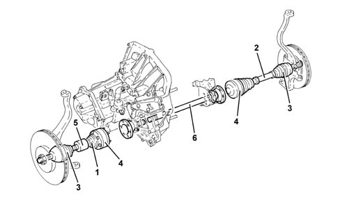
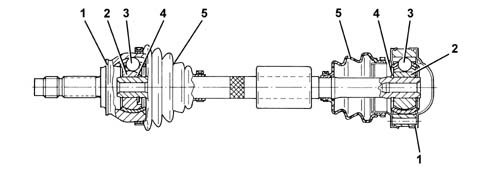

2710A drive shafts and joints
- Path
- Descriptions > 27 AXLE > 2710 FRONT AXLE > 2710A drive shafts and joints
- Kind
- system description
- Applies to
- engines: 1.6 TS, 2.0 TS; all production periods
- Interactive page
- https://sloeber94.github.io/elrnDB-a147/en/#/3022474
Applies to: engines: 1.6 TS, 2.0 TS; all production periods
CONSTRUCTION FEATURES
The driveshafts are made from high resistance steel and have splined ends for matching with the constant velocity joints on the wheel side and the sliding joints on the gearbox side.
The sliding joints are similar to the constant velocity joints, but have less articulation capacity.
There is a balancing mass on the right driveshaft which damps vibrations.
An intermediate shaft is fitted in order to be able to keep the length of the left and right driveshafts on the left side at the differential output the same. To prevent vibrations, depending on the version, the intermediate shaft is supported by a housing in the oil sump casting or by a support fixed to the cylinder block/crankcase.

1 - Left driveshaft 2 - Right driveshaft 3 - Constant velocity joints 4 - Sliding joints 5 - Balancing mass 6 - Intermediate shaft
CONSTANT VELOCITY JOINTS
The constant velocity and sliding joints consists of:
- driven outer ring (1);
- an inner driving ring (2) fitted on the driveshaft;
- a transmission ball (3);
- a circlip (4);
- a protective boot (5).

The driven outer ring in the constant velocity joint has splining from the threaded end for matching with and locking the wheel hub.
In the sliding joint, the driven outer ring consists of a flange in order to be fixed to the gearbox output driveshafts. A circlip keeps the joint in position on the splining and a boot protects the joint, preventing the intake of dirt.
OPERATION
There is a hinged element inside the constant velocity joints which allows the smooth transmission of the movement from the gearbox to the wheels for all possible wheel angles and positions during driving.